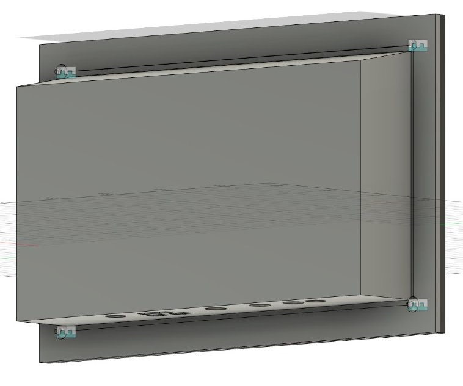
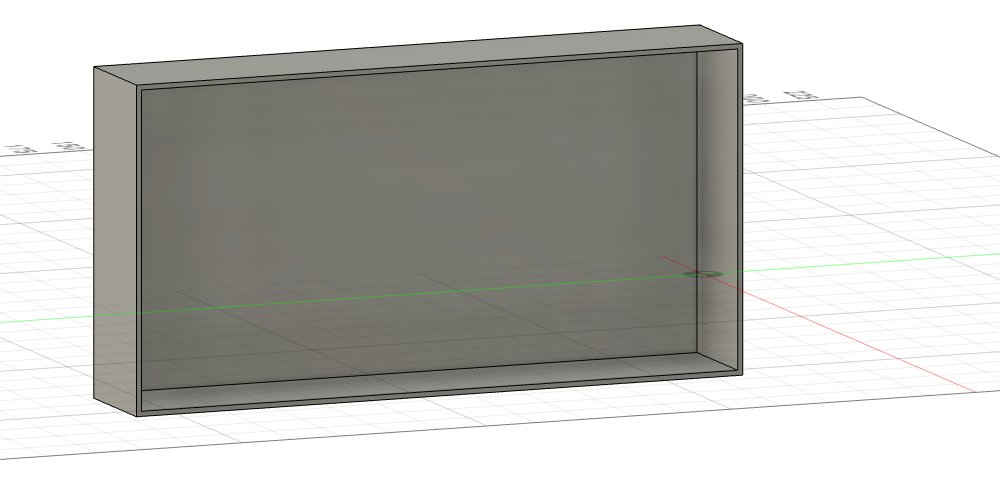
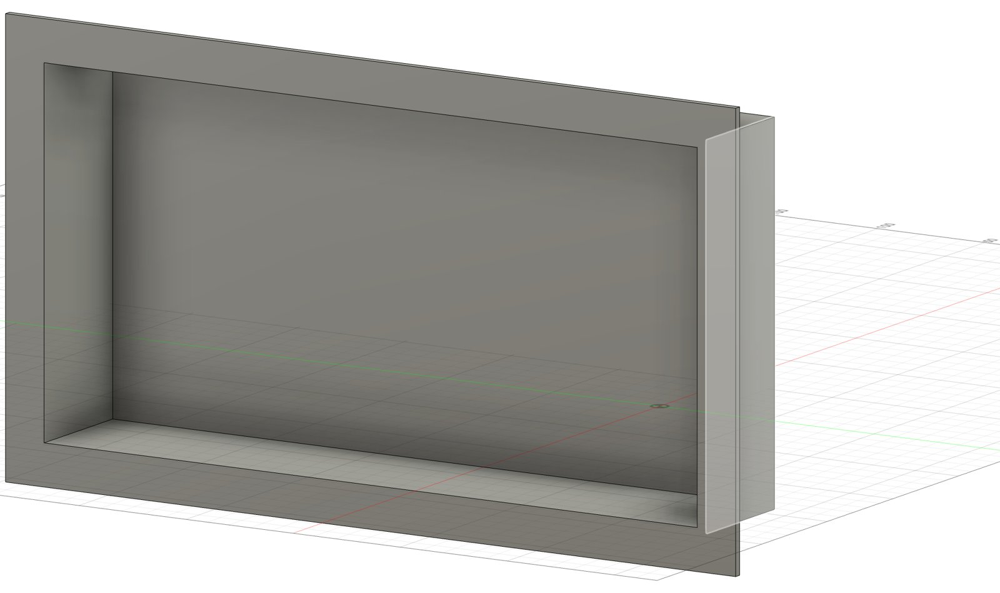
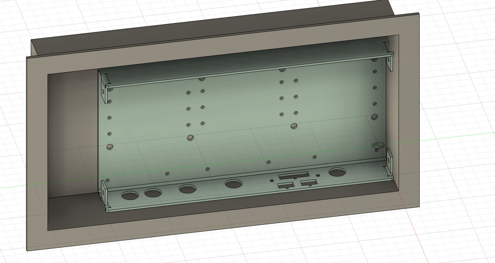
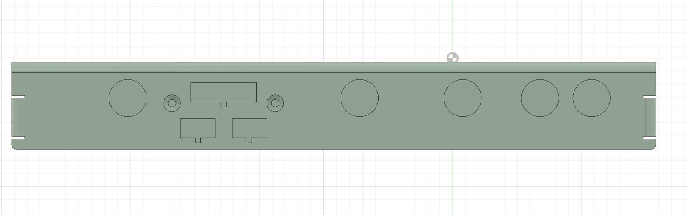
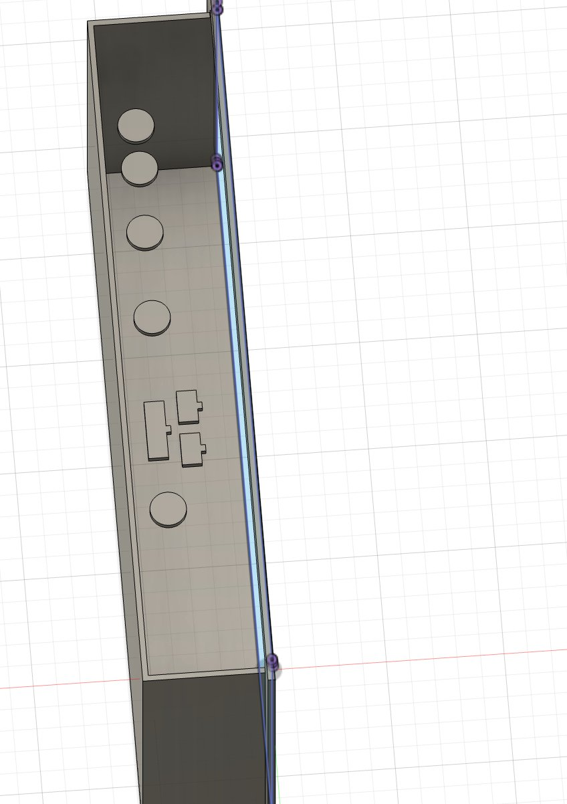
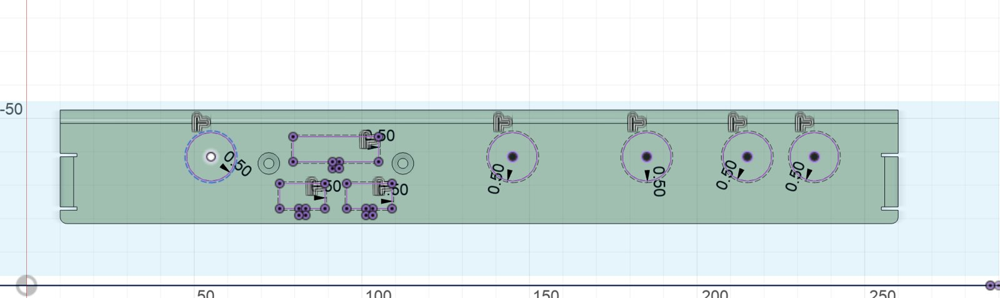
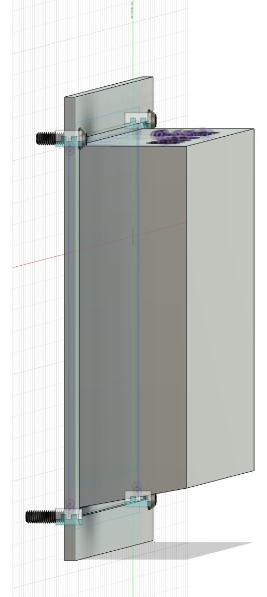
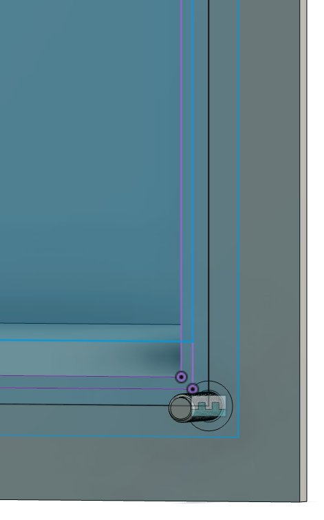

A sealed box for a solar car’s motor controller
A water-resistant enclosure for the motor controller on Sunstruck, the Stanford Solar Car Project’s car for the 2027 World Solar Challenge. I designed it in Fusion 360 to be 3D printed in ASA, sealed with closed-cell EPDM foam, and bolted to the carbon fiber chassis with M6 bolts into threaded inserts.
The brief
The motor controller is what turns battery power into motion, so it can’t get wet and it can’t shake loose. It needed a box that keeps water out, mounts solidly to the carbon fiber chassis, and still lets every cable plug into the controller where it sits.
It mounts by the wide flange at its back, bolted to the chassis with an M6 bolt in each corner. A loop of foam on the flange, inside the bolts, seals it against the carbon fiber. The top is slanted so water runs off instead of sitting on it, and the controller sits inside with its connectors facing down.
It will be printed in ASA, an outdoor-grade printing plastic, and the openings for the connectors come straight from the controller’s own CAD model instead of from a ruler.

Design log
1. A box, then a step back
I started with a solid box sized around the controller, with four square tabs on the outside for bolting it to the chassis. Then I took the tabs off again. The Shell tool hollows everything it touches, and I wanted to hollow the box without hollowing the tabs too.
With the tabs gone, Shell gave me even walls on five sides and left the sixth open. The order of operations mattered more than any single feature.

2. A flange to seal against
A thin wall edge is a bad place for a seal, so I added a flange around the open side to give it a flat face to press against the chassis. My first flange was too narrow. Once I thought about what actually has to fit on it, a strip of foam and a bolt hole at each corner, I made it wider.

3. Putting the controller inside
Before cutting anything, I looked at the controller’s connector face to see which openings the enclosure needed: five round connectors, one wide rectangular one, two small rectangular ones, and two small holes.
Then I moved the controller’s model into the box. Dragging it around wasn’t precise enough, so I switched to Align and typed in distances. It ended up with its connector side against the wall that will point down once the box is installed.


4. Cutting the connector openings
Instead of measuring each connector, I projected the controller’s connector outlines straight onto the enclosure wall, so every opening lines up with its connector exactly. Then I offset each outline 0.5 mm outward, so the connectors fit through with clearance instead of rubbing on the edges.
My first extrude added material instead of removing it. I flipped the direction and switched the operation to Cut, which gave clean holes through the wall.


5. Bolting it down
Each flange corner got a 6.7 mm clearance hole for an M6 bolt. I pulled the bolts in from the McMaster-Carr library rather than modeling them. The first one came in facing the wrong way, so I flipped it. With all four placed, the threads run through the flange toward the threaded inserts in the chassis.

6. The gasket
Last, I sketched on the flange face to mark where the foam would go, then modeled the closed-cell EPDM foam tape as a loop around the opening. It sits inside the bolts, which keeps the bolt holes outside the sealed area instead of giving water a way in.

7. A top that sheds water
The last change was the top. A flat top would give water somewhere to sit, so I slanted it down and away from the flange, and water now runs straight off. With the connectors on the bottom wall facing down, they stay out of the way of whatever runs off the top.
What I’d tell myself next time
Order matters
Shelling before adding the tabs and flange saved me from undoing work. In CAD, the order you build features in is part of the design.
Reference the real part
Projecting the connectors from the controller’s model beat measuring them. If the controller changes, the openings can follow it.
Check what a feature actually did
The extrude that added material and the bolt that came in backwards were both easy fixes, but only because I looked before moving on.